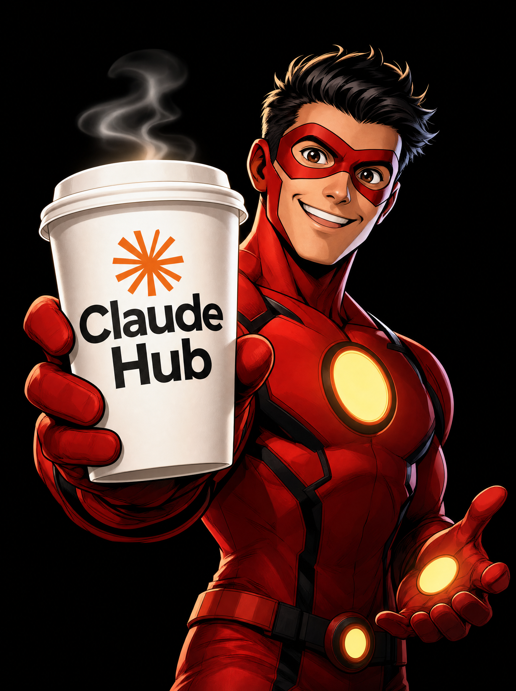

Что делаем в уроке
- Анализируем интерфейс.
- Делаем смету по картинкам.
- Пробуем расшифровывать текст на изображениях.
- Генерим картинку.
- Делаем мультик.
Здесь собраны примеры из урока про визуальные задачи: как Claude смотрит на интерфейсы, картинки, скрины и начинает работать с ними как с полноценным заданием.
Вот пример изображения, с которым можно работать как с визуальным материалом: разбирать композицию, текст, подачу и дальше использовать в задачах.

И вот короткий ролик как пример следующего шага: не просто картинка, а уже движение.
Домашка по вашему выбору внутри урока. Берите тот визуальный сценарий, который ближе к вашим задачам: интерфейс, картинки, текст на изображении, генерация или короткое видео.